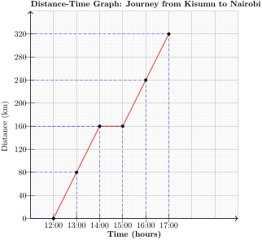
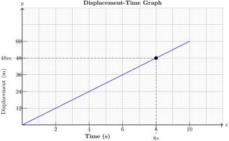
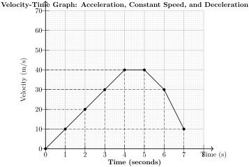

\(\textbf{Linear motion}\) refers to the movement of an object in a straight line.
It is described using key concepts such as distance, displacement, speed, velocity and acceleration.
\(\textbf{Linear motion} \) is present in many real-world scenarios:
Vehicles - Cars accelerating, stopping, and moving at constant speed.
Sports - Running, cycling, and swimming events involve linear motion.
Free Fall - Objects falling under gravity move in linear motion.
Subsection2.9.1Speed
\(\textbf{Speed}\) is the rate of change of distance with time. SI unit: \(km/h\) .
Speed normally varies over time, so the average speed is often used
\begin{gather*}
\textbf{Average speed} = \frac{\textbf{Total distance covered}}{\textbf{Total time taken}}
\end{gather*}
Activity2.9.1.
\({\color{black} \textbf{Work in groups}}\)
\(\textbf{Materials}\text{;}\) Stop watch, Measuring tape and ball/round object
Roll a ball or any round object on the table
Measure the rolling distance using the tape measure
Record the time when rolling
Find the speed of the rolling ball
Activity2.9.2.
\({\color{black} \textbf{Work in groups}}\)
A family drives 120 km at 60 km/h, stops for a 15-minute break, and then drives another 80 km at 40 km/h. What is the average speed for the entire trip?
Alex is cycling from home to the market. He rides the first 8 km at a speed of 16 km/h. After reaching a park, Alex takes a 20-minute break to play football with his friends. Then, he cycles the remaining 6 km to the market at a speed of 12 km/h. What was Alex’s average speed for the entire journey?
Alex’s average speed for the entire journey was approximately \(\textbf{10.53 km/h} \text{.}\)
ExercisesExercises
1.
Juma cycled for \(3\) hours to a trading centre \(60\) km away, then drove \(250 \,\)km in a van at \(50 \,\) km/h and finally cycled home at \(20 \,\) km/h. Find the average speed for the whole journey.
2.
Sarah is rushing to school. She walks the first \(\textbf{500 meters} \,\) at \(\, \textbf{5 km/h}\text{,}\) realizing she’s late, she then sprints the next \(\textbf{300 meters} \,\) at \(\, \textbf{10 km/h}\) What was her average speed for the entire trip to school?
3.
John walks to the store, a distance of \(\textbf{1 km}\text{,}\) at a speed of \(\textbf{4 km/hr}\text{.}\) He spends \(\textbf{15 minutes}\) at the store, and then walks back at \(\textbf{5 km/hr}\text{.}\) What was John’s average speed for the entire trip, including the time spent at the store
4.
A hiker covered \(\textbf{ 12 km in 3 hours}\text{.}\) After taking a \(\textbf{15 minute}\) break, what speed must the hiker maintain to reach their destination within a total travel time of \(\textbf{4 hours}\text{?}\)
5.
A runner completed \(\textbf{ 10 km in 1.5 hours}\text{.}\) After a \(\textbf{5 minute}\) rest, what pace does the runner need to maintain to finish a total distance within \(\textbf{2 hours}\text{?}\)
6.
A train journey consisted of three segments. The train traveled for \(\textbf{ 3 hours at 90 km/h}\text{,}\) then paused form \(\textbf{ 0.75 hours}\) at a station, and finally continued for \(\textbf{ 2 hours at 70 km/h}\text{.}\) What was the average speed of the train for the entire journey?
Subsection2.9.2Velocity and Acceleration in Different Situations
\(\textbf{Velocity}\) is Speed in a specified direction or the rate of change of displacement with time.
Velocity differs from speed as it includes direction.
Symbol of velocity is given as \(\textbf{v}\) while speed is given as \(\textbf{s}\)
\(v = \frac{\textbf{d}}{\textbf{t}} \)
where \(\textbf{d}\) represents the distance and \(\textbf{t}\) represents time
For motion with \(\textbf{constant velocity}\text{,}\) the equation is
\begin{gather*}
\textbf{s = vt}
\end{gather*}
where \(\textbf{v}\) is velocity , \(\textbf{t}\) is time and \(\textbf{s}\) is displacement
\(\textbf{Acceleration}\) - The rate of change of velocity with time. The symbol is \(a\) and SI unit is \(m/s²\)
Acceleration is given by
\begin{gather*}
\textbf{Acceleration} \, = \frac{\textbf{Change in velocity}}{\textbf{Time Taken}}
\end{gather*}
\begin{gather*}
a = \frac{\Delta v}{\Delta t}
\end{gather*}
Negative acceleration is called \(\textbf{ ( deceleration or retardation)}\)
For motion with \(\textbf{constant acceleration}\text{,}\) the three equations of motion are:
\begin{gather*}
a = \frac{\textbf{(5 m/s - 20 m/s)}}{\textbf{3 seconds}}
\end{gather*}
\begin{gather*}
a = \frac{\textbf{(-15 m/s)}}{\textbf{3 seconds}}
\end{gather*}
\begin{gather*}
\textbf{ a = - m/s²}
\end{gather*}
The object’s acceleration is \(\textbf{ -5 m/s²}\text{.}\) The negative sign indicates deceleration (slowing down).
ExercisesExercises
1.
A car’s velocity changes from \(\textbf{10 m/s to 30 m/s}\) in \(4\) seconds. Find its acceleration.
2.
A car moves with \(\textbf{8 m/s² }\) acceleration for \(5\) seconds, reaching \(\textbf{40 m/s}\text{.}\) Find its initial velocity.
3.
A train moving at \(\textbf{ 40 km/h }\) decelerates at \(\textbf{0.5 m/s² }\text{.}\) Find the time taken to stop
4.
A cyclist’s speed increases from \(\textbf{ 5 m/s to 17 m/s }\) over a period of \(\textbf{ 6 seconds }\) . What is the cyclist’s average acceleration?
5.
A runner’s velocity changes from \(\textbf{ 3 m/s to 7 m/s }\text{.}\) What is the runner’s average velocity?
Subsection2.9.3Displacement Time Graph of Different Situations
The \(\textbf{distance}\) - The total length of the path traveled by an object.
\(\textbf{Displacement}\) is the shortest distance from the initial to the final position of an object, represented as a vector.
When distance is plotted against time, a distance-time graph is obtained.
Activity2.9.4.
\({\color{black} \textbf{Work in groups}}\)
A motorist travels from Limuru to Kisumu. The table below shows the distances covered at different times:
\(\textbf{Time}\)
\(\textbf{Distance (km)}\)
\(\textbf{9:00 AM}\)
\(0\)
\(\textbf{10:00 AM}\)
\(80\)
\(\textbf{11:00 AM}\)
\(160\)
\(\textbf{11:30 AM}\)
\(160\)
\(\textbf{12:00 PM}\)
\(210\)
Graph the data and use it to answer
How far was the motorist from Limuru at 10:30 AM?
What was the average speed during the first part of the journey?
What was the overall average speed?
Example2.9.7.
A car moves with a constant velocity of \(\textbf{5 m/s}\) for \(8\) seconds.
Draw the displacement-time graph and determine the displacement at \(\textbf{t = 6s}\text{.}\)
Solution.
Since the velocity is constant, the displacement increases linearly with time
A car moves in three different phases as shown below;
The car starts from rest and accelerates uniformly. The car moves at a constant velocity. The car comes to a stop and remains at a fixed position.
Sketch a displacement-time graph for the motion.
Identify the type of motion in each phase.
Determine the displacement at \(t = 3s, t = 6s, and t = 9s. \)
Solution.
\(\textbf{0s to 3s}\) - The displacement follows a curved path because the car is accelerating.
\(\textbf{3s to 6s}\) - The displacement increases linearly since the velocity is constant.
\(\textbf{6s to 9s}\) - The displacement remains constant because the car has stopped.
ExercisesExercises
1.
A car moves along a straight road, and its displacement from the starting point is recorded at different times.
The data is shown below;
\(\textbf{Time (s)}\)
\(\textbf{Displacement (m)}\)
\(0\)
\(0\)
\(2\)
\(4\)
\(4\)
\(10\)
\(6\)
\(16\)
\(8\)
\(20\)
\(10\)
\(20\)
\(12\)
\(15\)
\(14\)
\(8\)
\(16\)
\(0\)
Plot a displacement-time graph using the data above
Describe the motion of the car based on the graph.
Identify the time intervals when the car is at rest
Find the velocity of the car at the following intervals
0 to 6 seconds
6 to 10 seconds
10 to 16 seconds
Determine the total distance traveled by the car.
2.
Study the following description of a runner’s motion and sketch the corresponding displacement-time graph
The runner starts from rest and accelerates uniformly for \(\textbf{ 5 seconds}\text{,}\) covering a displacement of \(\textbf{25 meters}\text{.}\)
The runner maintains a constant speed for the next \(\textbf{ 10 seconds}\text{,}\) covering an additional \(\textbf{ 50 metres}\text{.}\)
The runner then decelerates uniformly for \(\textbf{ 5 seconds}\) until stopping at \(\textbf{ 100 meteres}\text{.}\)
Sketch the displacement-time graph based on this motion.
Determine the velocity during the constant speed phase.
Calculate the acceleration during the first \(\textbf{ 5 seconds}\text{.}\)
Find the total time taken to complete the journey.
What is the average velocity for the entire motion?
3.
The displacement-time graph represents the motion of a cyclist
From \(\textbf{0 to 4 seconds}\text{,}\) the cyclist moves forward at a uniform velocity.
From \(\textbf{4 to 8 seconds}\text{,}\) the cyclist is stationary.
From \(\textbf{8 to 12 seconds}\text{,}\) the cyclist moves back towards the starting point at a uniform velocity.
Sketch the graph for this motion.
What is the velocity during the first \(\textbf{4 seconds}\text{?}\)
What does the flat section of the graph indicate?
Find the velocity during the last \(\textbf{4 seconds}\text{.}\)
Calculate the total displacement at the end of \(\textbf{12 seconds}\text{.}\)
Subsection2.9.4Interpretation of displacement time graph
The interpretation of the graph depends on its shape and slope:
Slope of the Graph (Gradient) = Velocity
A steeper slope means higher velocity.
A positive slope (upward line) indicates motion in the positive direction.
A negative slope (downward line) means motion in the negative direction.
A zero slope (horizontal line) means the object is at rest (no change in displacement).
Shape of the Graph
Straight Line: Uniform (constant) velocity.
A curved line indicates that the object’s velocity is changing, meaning it’s accelerating or decelerating.
Flat Line: No movement (object is stationary).
Interpreting Different Sections
A horizontal straight line means the object is stationary (velocity is zero).
A steeper line means the object is moving faster.
Activity2.9.5.
Work in groups
Consider the displacement time graph representing distance covered by a motorist traveling from Turkana to Nairobi.

How far was the motorist from the starting point at \(2:30\textbf{ PM}\text{?}\)
What was the total distance covered by the motorist?
During which periods was the motorist stationary?
Calculate the average speed of the motorist between \(12 \textbf{ noon}\) and \(2 \textbf{ PM}\text{.}\)
What was the overall average speed for the entire journey?
Example2.9.10.
Use the displacement-time graph for constant velocity to answer the following questions.

What type of motion does the graph represent? Explain your answer.
What is the displacement of the car at \(\textbf{t}\) = \(8\) seconds?
What is the total displacement at \(\textbf{t}\) = \(10\) seconds
Determine the velocity of the car from the graph.
Solution.
The graph shows a straight line with a constant slope, indicating uniform motion. This means the car is moving at a constant velocity with no acceleration.
From the graph, the displacement at \(\textbf{t}\) = \(8\) seconds is \(48\) meters.
Slope of the Graph: Represents acceleration (how fast velocity is changing).
Area Under the Graph: Represents displacement (total distance covered).
\(\textbf{Types of Velocity-Time Graphs:}\)
Horizontal Line:
The object is moving at a constant velocity (zero acceleration).
Upward Sloping Line:
The object is accelerating (velocity is increasing).
Downward Sloping Line:
The object is decelerating (velocity is decreasing).
Line at Zero Velocity:
The object not moving.
Activity2.9.6.
Work in groups
A train moving at \(40 \text{ m/s}\) along a North-South railway track passes through a station R at \(5:30 \textbf{ PM}\text{.}\) The train is decelerating at \(4 \textbf{ m/s²}\) northward.
Find the velocity of the train:
\(3 \textbf{ seconds}\) after \(5:30 \textbf{ PM}\)
\(6 \textbf{ seconds}\) after \(5:30 \textbf{ PM}\)
\(2 \textbf{ seconds}\) after \(5:30 \textbf{ PM}\)
Determine the average velocity of the train:
In the first \(5 \textbf{ seconds}\) after \(5:30 \textbf{ PM}\)
In the first \(10 \textbf{ seconds}\) after \(5:30 \textbf{ PM}\)
Draw a velocity-time graph, find the distance of the train from R at \(12\) seconds past \(5:30 \textbf{ PM}\)
Example2.9.12.
Given the table below
Table2.9.13.
Time
\(0\)
\(1\)
\(2\)
\(3\)
\(4\)
\(5\)
\(6\)
\(7\)
Velocity (m/s)
\(0\)
\(10\)
\(20\)
\(30\)
\(40\)
\(40\)
\(30\)
\(10\)
Draw the velocity-time graph to represent the data.
Solution.

Example2.9.14.
A car starts from rest and accelerates to a velocity of \(40 \textbf{ m/s}\) in \(10 \textbf{ seconds}\) . It then maintains this velocity for \(15 \textbf{ seconds}\) before decelerating to rest, with the total time of motion being \(45 \textbf{ seconds}\)
Draw the velocity-time graph to represent its motion.
Find the total distance covered.
Determine the average velocity.
Calculate the acceleration and deceleration.
Solution.
The velocity-time graph;
The total distance is the area under the velocity-time graph, which consists of a trapezium.
Draw the velocity time graph to represent the data
Use the graph describe the motion of the vehicle. Is the velocity constant, increasing, or decreasing? Justify your answer.
Calculate the average velocity of the vehicle between \(\textbf{t}\) = \(0 \textbf{ s}\) and \(\textbf{t}\) = \(3 \textbf{ s}\)
2.
A motorcycle starts from rest and accelerates uniformly to a speed of \(30 \textbf{ m/s}\) in \(8 \textbf{ seconds}\text{.}\) It then continues at this speed for \(12 \textbf{ seconds}\) before decelerating uniformly to rest over \(10 \textbf{ seconds}\text{.}\) The total time of motion is \(30 \textbf{ seconds}\)
Draw the velocity-time graph to represent its motion.
Find the total distance covered.
Determine the average velocity.
Calculate the acceleration and deceleration.
3.
After takeoff, an airplane reaches a cruising speed of \(250 \textbf{ m/s}\) and maintains it for \(30 \textbf{ minutes}\text{.}\) Draw a velocity-time graph representing the motion of the airplane from \(\textbf{t}\) = \(0\) to \(\textbf{t}\) = \(1800 \textbf{ seconds}\text{.}\)
4.
A cyclist starts at \(5 \textbf{ m/s}\) and increases speed to \(20 \textbf{ m/s}\) in \(15 \textbf{ sconds}\text{.}\)
Draw the Velocity-Time Graph.
calculate the acceleration of the cyclist.
What type of motion is represented by the velocity-time graph you drew?
Subsection2.9.6Relative Speed
Relative speed is a simple concept that helps us understand how fast one object is moving compared to another object. It’s important because sometimes objects are moving at different speeds, and we need to figure out how quickly they are closing the gap between them or moving away from each other.
Consider a case where two bodies moving in the same direction at different speeds. Their \(\underline{relative \, speed}\) is the difference between the individual speeds.
But if they are moving toward each other, their relative speed is the sum of their speeds.
Subsubsection2.9.6.1When Objects Move in the Same Direction
Activity2.9.7.Work in Groups..
In this activity you are required to work and groups and follow each step as listed.
Requirements:
Toy car (that can be pulled by a string).
String (long enough for the car to travel a sufficient distance).
Stopwatch or timer
Measuring tape or marked distance on the ground (e.g., 10 meters)
Pen and paper (for recording results)
Observers (to track the race and help evaluate results)
Calculator (optional, for calculations)
Steps:
Find a straight line or pathway that is clear and suitable for the race (a hallway, classroom floor, long corridor or outside on a field).
Measure out a distance for the race, such as 10 meters. You can use a measuring tape or use a marked area to set the starting and finishing points.
Mark the starting line and the finish line clearly, so both the toy car and the student know where to start and end.
Attach one end of the string securely to the toy car. The other end of the string should be held by a participant or fixed to an anchor (like a pole or sturdy object) so that when the student pulls the string, the car moves along the line and test the toy car to ensure that it moves easily along the straight path when the string is pulled.
You will have two participants: one student (who will walk) and one toy car (which will be pulled by the string).
Assign at least one observer to track the race. The observer(s) will help measure the time it takes for each participant (the student and the toy car) to reach the finish line.
Place the student and the toy at the starting line. The student should be ready to walk at a constant speed.
On the count of "Go!", the student starts walking in a straight line towards the finish line. At the same time, the person holding the string should start pulling the toy car in the same direction (straight line) at a constant speed. The toy car should be pulled in a way that resembles a consistent movement, not too fast or too slow.
The observers should start the stopwatch as soon as both participants begin moving and stop it when either the student or the toy car reaches the finish line.
Record the time taken by both the student and the toy car to reach the finish line. If you have more than one observer, make sure they agree on the recorded times.
After the race, you need to calculate the relative speed between the student and the toy car.
Let’s say the student took \(T1\) seconds to cover the distance (\(10\) meters), and the toy took \(T2\) seconds to cover same distance
If the student and the toy car are moving in the same direction, the relative speed can be given as:
\begin{align*}
Relative \, speed \amp = Speed \, of \, Toy \, Car - Speed \, of \, Student
\end{align*}
Compare and share your fndings with other groups of both the student and the toy car.
Discuss;
Who moved faster? Was the student walking faster or slower than the toy car?
Why one object might have moved faster than the other. Did the toy car move faster because it was pulled, or was the student faster in their walking?
The relative speed: How does the speed of each participant relate to the other? Did they move away from each other, or did they move closer together?
Now try the activity in different conditions or compare vraious speed by repeating the race multiple times.
Have the student walk faster or slower.
Change the length of the race to see how it affects the results.
Adjust how fast the toy car is pulled.
Example2.9.16.
A cyclist is riding at a speed of \(12\)km/h, and a motorcycle is moving at a speed of \(20\)km/h on the same road in the same direction. If the cyclist starts \(100\) meters ahead of the motorcycle, how long will it take for the motorcycle to overtake the cyclist?
Solution.
Since the objects are moving in the same direction, we calculate the relative speed by subtracting the cyclist’s speed from the motorcycle’s speed:
\begin{align*}
\text{Realative Speed} \amp = \text{Speed of Motorcycle} \, - \, \text{Speed of Cyclist}
\end{align*}
\begin{align*}
\amp = 20 \, km/h \, - \, 12 \, km/h
\end{align*}
\begin{align*}
\amp = 8 \, km/h
\end{align*}
Now letes convert relative speed to meters per second, so that we can work with the distance in meters, we need to convert the relative speed from km/h to m/s.
The initial distance between the motorcycle and the cyclist is 100 meters. To calculate the time it will take for the motorcycle to overtake the cyclist,we have:
\begin{align*}
Time \amp = \frac{Distance}{Relative \, Speed}
\end{align*}
A car travels at \(60\)km/h, and a truck travels at \(45\)km/h in the same direction on a straight road. If the car starts \(150\) meters behind the truck, how long will it take for the car to overtake the truck
Solution.
The relative speed between the car and the truck is:
\begin{align*}
\text{Relative Speed} \amp = \text{Speed of Car} - \text{Speed of Truck}
\end{align*}
\begin{align*}
\amp =60 \, km/h - 45 \, km/h
\end{align*}
\begin{align*}
\amp = 15 \, km/h
\end{align*}
Convert Relative Speed to Meters per Second: Convert 15 km/h to m/s:
\begin{align*}
\amp = 15 \, km/h \times \frac{1000}{3600}
\end{align*}
\begin{align*}
\amp = 4.17 \, m/s
\end{align*}
The initial distance between the car and the truck is 150 meters. Use the formula to calculate the time:
A cyclist is riding at a speed of \(18\)km/h, and a motorcycle is traveling at \(30\)km/h on the same road. If the cyclist starts \(200\) meters ahead of the motorcycle, how long will it take for the motorcycle to overtake the cyclist?
2.
A toy car is being pulled along a straight path at a speed of \(5\)m/s, while a person walks at \(2\)m/s along the same path. If the toy car starts \(15\) meters ahead of the person, how much time will it take for the person to catch up with the toy car?
3.
Two cyclists are riding along the same road. Cyclist \(A\) is traveling at \(12\)km/h and Cyclist \(B\) is traveling at \(15\)km/h. If Cyclist \(B\) starts \(100\) meters behind Cyclist \(A\text{,}\) how long will it take for Cyclist \(B\) to overtake Cyclist \(A\text{?}\)
4.
A person walks at a speed of \(1.5\)m/s, and a dog runs at a speed of \(3\)m/s. If the dog starts \(10\) meters behind the person, how long will it take the dog to catch up with the person?
5.
Two buses are traveling on the same road in the same direction. Bus \(A\) moves at \(55\)km/h, and Bus \(B\) moves at \(45\)km/h. If Bus \(A\) is \(500\) meters behind Bus \(B\text{,}\) how long will it take for Bus \(A\) to overtake Bus B?
Subsubsection2.9.6.2When Objects Move Toward Each Other (Opposite Directions).
Activity2.9.8.
Using Activity 2.9.7. above now try the race such the racers move towards each other such that.
Using the starting and finishing point.
Put the Student on the marked end, and
The Toy car on the other end.
Measure time, record and calculate the speeds.
If the student and the toy car are moving in the same direction, the reative speed is given as;
\begin{align*}
Relative \, speed \amp = Speed \, of \, Toy \, Car + Speed \, of \, Student
\end{align*}
Discuss;
Who moved faster? Was the student walking faster or slower than the toy car?
Why one object might have moved faster than the other. Did the toy car move faster because it was pulled, or was the student faster in their walking?
The relative speed: How does the speed of each participant relate to the other? Did they move away from each other, or did they move closer together?
Now try the activity in different conditions or compare vraious speed by repeating the race multiple times.
Have the student walk faster or slower.
Change the length of the race to see how it affects the results.
Adjust how fast the toy car is pulled.
Example2.9.18.
A train left town X at \(10:00\)AM and traveled towards town \(Y\) at a speed of \(90\)km/h. A second train left town \(Y\) at \(11:00\)AM and traveled towards town \(X\) at \(120\)km/h. The distance between town \(X\) and town \(Y\) is \(360\)\(km\text{.}\)
At what time will the two trains meet?
How far from town X will they meet?
Solution.
The first train departs at \(10:00\)AM, and the second train departs at \(11:00\)AM. Therefore, the first train travels for \(1\) hour before the second train starts.
The distance traveled by the first train in 1 hour:
Thus, the meeting point is approximately \(116\,km \) from town \(X.\)
Example2.9.19.
Two cyclists start from the same point and travel in opposite directions. One cyclist rides at 20 km/h, and the other rides at 30 km/h. After 2 hours, they are 100 km apart.
How long did it take for the cyclists to be 100 km apart?
How far did each cyclist travel?
Solution.
The cyclists are moving in opposite directions. The total distance between them after \(2\) hours is \(100\)km.
Since the cyclists are moving in opposite directions, their relative speed is the sum of their individual speeds:
So, the cyclists will be 100 km apart after 2 hours. This confirms the given information.
The first cyclist, riding at 20 km/h, travels:
\begin{align*}
\text{Distance covered by first cyclist} \amp = 20\,km/h \times 2\,hours
\end{align*}
\begin{align*}
\amp = 40\,km.
\end{align*}
The second cyclist, riding at 30 km/h, travels:
\begin{align*}
\text{Distance covered by second cyclist} \amp = 30\,km/h \times 2\,hours
\end{align*}
ExercisesExercises
1.
A motorist left Nakuru for Nairobi, a distance of \(240\) km, at 8.00 am. and travelled at an average speed of \(90\) km/h. Another motorist left Nairobi for Nakuru at \(8.30\)am. and travelled at \(100\)km/h. Find:
The time they met.
How far from Nairobi they met.
2.
A train travels from Mombasa to Nairobi, a distance of \(500\)km, at a speed of \(90\)km/h. If a second train starts \(1\) hour later from Mombasa and travels at a speed of \(120\) km/h, after how much time will the second train overtake the first one?
3.
A matatu left town \(A\) at \(7\)am. and travelled towards a town \(B\) at an average speed of \(60\)km/h. A second matatu left town \(B\) at \(8\)am. and travelled towards town \(A\) at \(60\)km/h. If the distance between the two towns is \(400\)km, find:
The time at which the two matatus met.
The distance of the meeting point from town \(A\text{.}\)
4.
A cyclist is riding towards a motorcyclist on a straight road. The cyclist travels at \(15\)km/h and the motorcyclist at \(45\)km/h. If they are initially \(100\) meters apart, how long will it take for the motorcyclist to overtake the cyclist?
5.
Two cars, \(A\) and \(B\text{,}\) are traveling on parallel roads. Car \(A\) moves at a speed of \(50\)km/h and car \(B\) moves at \(70\)km/h. If car \(B\) is \(150\) meters behind car \(A\text{,}\) how long will it take for car \(B\) to overtake car \(A\text{?}\)